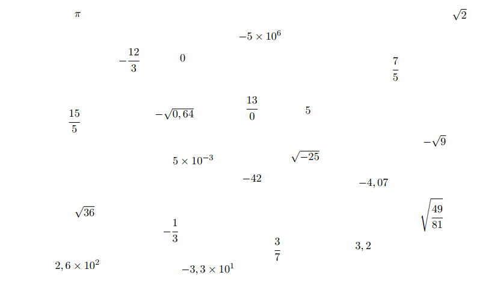
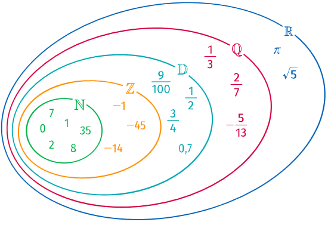
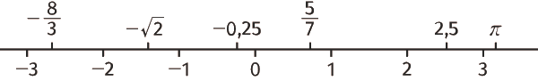
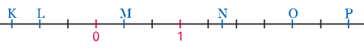

C01-01 : Ensembles de Nombres
La version pdf de ce cours est téléchargeable ici. (version 2021-2022)
Activité : Classer des nombres

-
Dans la liste ci-dessus, deux écritures sont interdites. Lesquelles et pourquoi ?
-
Classer les nombres restants en cinq groupes, en justifiant vos choix.
Différence entres propriétés et écritures
Un nombre peut être écrit de différentes manières, plus ou moins compliquées. Par exemple :
Pour autant, ce qui nous intéresse en mathématiques c'est d'étudier les propriétés de ce nombre, qui elles sont indépendantes de l'écriture de ce nombre.
Nombres entiers naturels et relatifs
Définitions
-
L'ensemble des entiers naturels, noté \(\mathbb{N}\), est l'ensemble des nombres permettant de dénombrer une collection d'objets, de personnes, etc, c'est-à-dire la suite naturelle \(0~;~1~;~2~;~3~;~...\)
-
L'ensemble des entiers relatifs, noté \(\mathbb{Z}\), est l'ensemble des entiers naturels et leurs opposés, c'est-à-dire la suite \(...~;~-3~;~-2~;~-1~;~0~;~1~;~2~;~3~;~...\)
Info
-
L'ensemble \(\mathbb{N}\) possède un plus petit élément, c'est \(0\).
-
Les nombres entiers naturels sont tous positifs ou nuls.
-
Tous les entiers naturels sont aussi des entiers relatifs.
Vocabulaire et notations
-
Appartenance : On dit que \(5\) appartient à \(\mathbb{N}\), et on note \(5 \in \mathbb{N}\). De même \(-2\) n'appartient pas à \(\mathbb{N}\), et on note \(-12 \notin \mathbb{N}\).
-
Inclusion : Tous les éléments de \(\mathbb{N}\) sont aussi des éléments de \(\mathbb{Z}\). On dit alors que \(\mathbb{N}\) est un sous-ensemble de \(\mathbb{Z}\) et on note alors \(\mathbb{N} \subset \mathbb{Z}\) (qui se lit \(\mathbb{N}\) est inclus dans \(\mathbb{Z}\)).
Application : choix du bon symbole
Compléter avec \(\in\) ou \(\notin\) :
\(7 \dots \mathbb{N}\)
\(-3 \dots \mathbb{N}\)
\(-5 \dots \mathbb{Z}\)
\(7 \dots \mathbb{Z}\)
\(\dfrac{1}{3} \dots \mathbb{N}\)
\(\sqrt{9} \dots \mathbb{N}\)
\(-\sqrt{25} \dots \mathbb{N}\)
\(-\sqrt{2} \dots \mathbb{Z}\)
\(5 \times 10^{3} \dots \mathbb{N}\)
\(5 \times 10 ^{-3} \dots \mathbb{Z}\)
\(-4,2 \dots \mathbb{Z}\)
\(3 \times (1 - \dfrac{1}{3}) \dots \mathbb{N}\)
Compléter avec \(\in\) ou \(\notin\) :
\(7 \in \mathbb{N}\)
\(-3 \notin \mathbb{N}\)
\(-5 \in \mathbb{Z}\)
\(7 \in \mathbb{Z}\)
\(\dfrac{1}{3} \notin \mathbb{N}\)
\(\sqrt{9} \in \mathbb{N}\) car \(\sqrt{9} = 3\)
\(-\sqrt{25} \notin \mathbb{N}\) car \(-\sqrt{25} = -5\)
\(-\sqrt{2} \notin \mathbb{Z}\) car \(-\sqrt{2} \simeq -1,414...\)
\(5 \times 10^{3} \in \mathbb{N}\) car \(5 \times 10^3 = 5 \times 1000 = 5000\)
\(5 \times 10 ^{-3} \notin \mathbb{Z}\) car \(5 \times 10 ^{-3} = 5 \times 0,001 = 0,005\)
\(-4,2 \notin \mathbb{Z}\)
\(3 \times (1 - \dfrac{1}{3}) \in \mathbb{N}\) car \(3 \times (1 - \dfrac{1}{3}) = 3 - 1 = 2\) (en développant) ou \(3 \times (1 - \dfrac{1}{3}) = 3 \times \dfrac{2}{3} = 2\) (en calculant entre parenthèses).
Nombres décimaux
définition : Nombres décimaux
Un nombre décimal est un nombre pouvant s'écrire sous la forme d'une fraction décimale, c'est à dire sous la forme $$ \dfrac{a}{10^n} $$ avec \(a\in \mathbb{Z}\) et \(n\in \mathbb{N}\).
L'ensemble des décimaux est noté \(\mathbb{D}\).
Application : Nombres décimaux et puissances de 10
Pour chacun des nombres suivants, déterminer si possible une écriture de la forme \(\dfrac{k}{10^n}\).
\(4,37\)
\(0,002\)
\(-12\)
\(\dfrac{1}{3}\)
\(\dfrac{2}{5}\)
\(\sqrt{0,16}\)
\(10^3\)
\(10^{-5}\)
\(-10^5\)
\(\dfrac{3.10^5}{10^7}\)
\(\dfrac{10^7}{3.10^5}\)
Pour chacun des nombres suivants, déterminer si possible une écriture de la forme \(\dfrac{k}{10^n}\).
\(4,37 = \dfrac{437}{100} = \dfrac{437}{10^{2}}\)
\(0,002 = \dfrac{2}{1~000} = \dfrac{2}{10^{3}}\)
\(-12 = \dfrac{-12}{1} = \dfrac{-12}{10^{0}}\) ( car \(a^0 =1\) pour tout nombre \(a \neq 0\)).
\(\dfrac{1}{3} \notin \mathbb{D}\) car \(\dfrac{1}{3} \simeq 0,333...\) (La démonstration réelle sera donnée plus tard dans l'année)
\(\dfrac{2}{5} = \dfrac{4}{10} = \dfrac{4}{10^1}\)
\(\sqrt{0,16} = 0,4 = \dfrac{4}{10} = \dfrac{4}{10^1}\)
\(10^3 = \dfrac{1~000}{1} = \dfrac{1~000}{10^{0}}\)
\(10^{-5} = \dfrac{1}{10^5}\) (par définition des exposants négatifs \(a^{-n} = \dfrac{1}{a^n}\) pour tout \(n \in \mathbb{Z}\) si \(a \neq 0\))
\(-10^5 = - 100~000 = \dfrac{- 100~000}{1} = \dfrac{- 100~000}{10^{0}}\)$
\(\dfrac{3.10^5}{10^7} = \dfrac{3}{10^2}\) par division des puissances (\(\dfrac{a^m}{a^n} = a^{m-n}\) pour tout \(m,n \in \Z\))
\(\dfrac{10^7}{3.10^5} = \dfrac{10^2}{3} \simeq 33,333.... \notin \mathbb{D}\)
Remarques
- Les entiers relatifs sont des décimaux, car si \(k \in \mathbb{Z}\), on peut aussi écrire \(k=\dfrac{k}{1}=\dfrac{k}{10^0}\). On a donc la propriété \(\mathbb{Z} \subset \mathbb{D}\).
- Un nombre décimal possède une écriture décimale finie.
Nombres rationnels
Définition : Nombres rationnels
Un nombre rationnel est un nombre pouvant s'écrire sous la forme \(\dfrac{a}{b}\) avec \(a\in \mathbb{Z}\) et \(b\in \mathbb{N}^{*}\) (c'est-à-dire \(\mathbb{N}\) privé de \(0\)).
L'ensemble des nombres rationnels est noté \(\mathbb{Q}\).
Remarque
Un nombre décimal est par définition un nombre rationnel.
Par définition de \(\mathbb{D}\) et \(\mathbb{Q}\), on a la propriété \(\mathbb{D} \subset \mathbb{Q}\).
Propriété : Caractérisation des rationnels non décimaux
Tous les nombres rationnels ne possèdent pas d'écriture décimale finie. En particulier, \(\dfrac{1}{3}\) n'est pas décimal.
Preuve
La démonstration de cette propriété sera faite plus tard dans l'année, dans le chapitre arithmétique.
Remarques
-
Les nombres rationnels non décimaux possèdent une écriture décimale infinie périodique, c'est-à-dire avec une série de chiffres qui se répètent à l'infini. Par exemple \(\dfrac{1}{7} = 0,14285714285714...\) (on constate la répétition de la séquence 142857}).
-
Réciproquement, si un nombre possède une écriture décimale infinie périodique, alors c'est un rationnel.
Méthode : Déterminer une fraction égale à une écriture décimale infinie périodique
On considère le nombre \(a\) dont l'écriture décimale est infinie périodique \(a = 2,71347134...\). Démontrons que ce nombre est rationnel.
Solution
On constate que la partie répétitive des chiffres de \(a\) est \(7134\), donc de taille 4.
Donc \(10^4 \times a = 10~000\times a = 27134,71347134...\).
D'où \(10~000\times a - a = 27134,71347134... - 2,71347134... = 27134 -2 = 27~132\).
Or \(10~000\times a - a = 9~999\times a\).
D'après les deux lignes précédentes, on a alors \(9~999\times a = 27132\) soit \(a = \dfrac{27~132}{9~999} = \dfrac{9~044}{3~333}\).
Donc \(a\) est bien un nombre rationnel puisqu'il s'écrit sous la forme d'une fraction.
Application : Calculs avec les rationnels
Dans chacun des cas suivants, calculer à la main chacune des expressions suivantes :
\(A = \dfrac {5}{7} - \dfrac{3}{11}\)
\(B = -\dfrac {4}{3} + \dfrac{7}{8}\)
\(C = \dfrac {3}{8} - \dfrac{5}{12}\)
\(D = \dfrac {-6}{7} \times \dfrac{8}{9}\)
\(E = \dfrac {3}{2} \times \left(-\dfrac{7}{3}\right)\)
\(F = \dfrac {48}{35} \times \dfrac{25}{64}\)
\(G = \dfrac {4}{7} \div \dfrac{8}{21}\)
\(H = \dfrac{~~\dfrac{3}{4}~~}{\dfrac{18}{20}}\)
\(I = \dfrac{~~7~~}{\dfrac{5}{3}}\)
\(J = \dfrac{~~\dfrac{7}{5}~~}{3}\)
\(A = \dfrac {5}{7} - \dfrac{3}{11} = \dfrac {5\times 11}{7\times 11} - \dfrac{3\times 7}{11\times 7} = \dfrac {55}{77} - \dfrac{21}{77} = \dfrac{34}{77}\)
\(B = -\dfrac {4}{3} + \dfrac{7}{8} = -\dfrac {4 \times 8}{3 \times 8} + \dfrac{7 \times 3}{8 \times 3} = -\dfrac {32}{24} + \dfrac{21}{24} -\dfrac {11}{24}\)
\(C = \dfrac {3}{8} - \dfrac{5}{12} = \dfrac {3\times 3}{8\times 3} - \dfrac{5 \times 2}{12 \times 2} = \dfrac {9}{24} - \dfrac{10}{24} = - \dfrac{1}{24}\)
\(D = \dfrac {-6}{7} \times \dfrac{8}{9} = \dfrac{-6 \times 8}{7 \times 9} = \dfrac{-2 \times 3 \times 8}{7 \times 3 \times 3} = -\dfrac{16}{21}\) N'oubliez pas de simplifier !
\(E = \dfrac {3}{2} \times \left(-\dfrac{7}{3}\right) = -\dfrac {3 \times 7}{2 \times3} = - \dfrac{7}{2}\)
\(F = \dfrac {48}{35} \times \dfrac{25}{64} = \dfrac{48 \times 25}{35 \times 64} = \dfrac{2 \times 3 \times 8 \times 5 \times 5}{5\times 7 \times 2 \times 4 \times 8} = \dfrac{15}{28}\)
\(G = \dfrac {4}{7} \div \dfrac{8}{21} = \dfrac {4}{7} \times \dfrac{21}{8} = \dfrac{4 \times 21}{7 \times 8} = \dfrac{ 4 \times 3 \times 7}{7 \times 2 \times 4} = \dfrac{3}{2}\)
\(H = \dfrac{~~\dfrac{3}{4}~~}{\dfrac{18}{20}} = \dfrac{3}{4}\div\dfrac{18}{20} = \dfrac{3}{4}\div\dfrac{20}{18} = \dfrac{3 \times 4 \times 5}{ 4 \times 3 \times 6} = \dfrac{5}{6}\).
\(I = \dfrac{~~7~~}{\dfrac{5}{3}} = 7 \div \dfrac{5}{3} = 7 \times \dfrac{3}{5} = \dfrac{21}{5}\)
\(J = \dfrac{~~\dfrac{7}{5}~~}{3} = \dfrac{7}{5} \div 3 = \dfrac{7}{5} \times \dfrac{1}{3} = \dfrac{7}{15}\)
Nombres réels
Définition : Nombres réels
Un {==nombre réel est un nombre exprimant une longueur, ou l'opposé d'un nombre exprimant une longueur.
L'ensemble des nombres rationnels est noté \(\mathbb{R}\).
Remarques
-
Un nombre réel est un nombre dont le carré est positif ou nul .
-
Par définition, tous les nombres rationnels sont des réels. On a alors \(\mathbb{Q} \subset \mathbb{R}\) .
-
Certains nombres réels ne sont pas rationnels. Par exemple \(\pi\) n'est pas rationnel, tout comme \(\sqrt{2}\) ( on le montrera en exercice ). Ces nombres sont dits irrationnels .
Propriété : Ensembles de nombres
Des remarques précédentes, on à la propriété :

Propriété : Droite des réels
Tout nombre réel est représenté par l'abscisse d'un point sur la droite numérique ( appelée aussi droite des réels ).

Application : Représenter sur la droite des réels
- Déterminer l'abscisse de chacun des points de la droite ci-dessous :

- Représenter la droite des réels ( unité : 5 ) et y placer le plus précisément possible les nombres suivants :